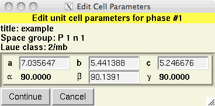
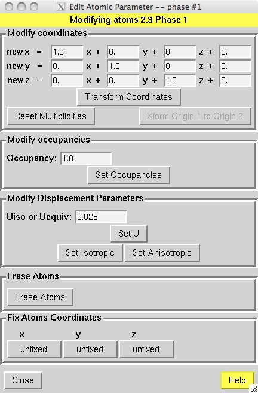
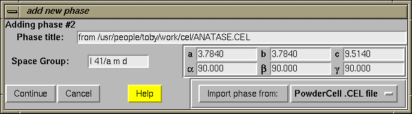
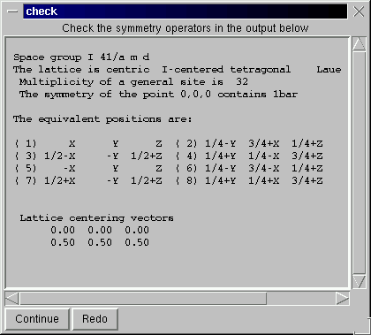
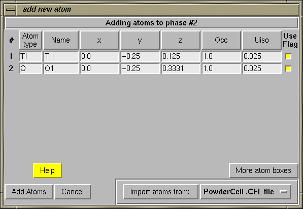
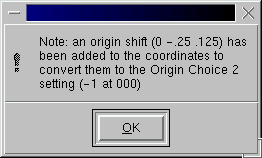
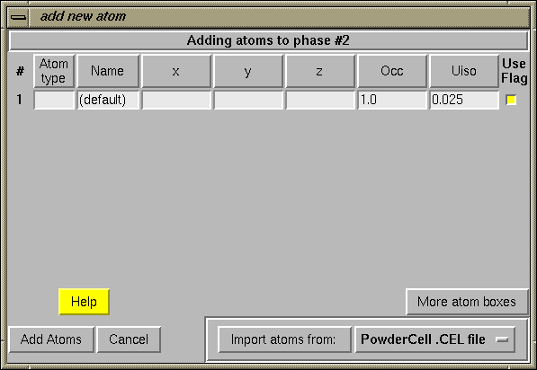
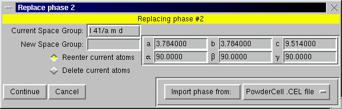

| EXPGUI top | Next page | Previous page |
|---|
EXPGUI, part 2
A.2 Phase Panel
-
The phase panel is used to edit information
about the structural model(s) found in the experiment
file. The flags for refining the unit cell and atomic parameters,
as well as ther damping values,
can be set on this panel. Note that if a
single atom is selected using the mouse, the information
for that atom can be edited. If a group of atoms is
selected
(see Mouse Actions)
the damping and refinement flags
for all the selected atoms are changed.
If the EXPTOOL program (see the installation instructions) is installed, buttons for adding phases and atoms will appear on this panel, as seen below. If the program is not properly installed, no errors occur, but the buttons do not appear.
Note that the order that atoms appear in this panel is
determined by the
"Sort Atoms by" option
in the Options Menu.  The parameter used for sorting is designated
with a "*" on the title line above the atoms.
Clicking on this title line rotates through the sorting modes.
The parameter used for sorting is designated
with a "*" on the title line above the atoms.
Clicking on this title line rotates through the sorting modes.
A.2.1 Modify Unit Cell Parameters

-

If the "Edit Cell" button is pressed, the unit cell parameters can be
changed, as shown to the right. Note that only the parameters allowed
by symmetry can be changed.
A.2.2 Modify Atom
-

The "Modify Atom" button ("Modify Atoms" when multiple atoms are
selected) provides access to additional options that can
transform or modify the selected atom(s) from the phase panel
(see Mouse Actions for
information on selecting atoms); this opens the menu window shown to
the right.
Note that changes are made to the coordinates when the buttons on this
window (such as
"Transform Coordinates", "Set Occupancies",...) are pressed.
Modify Coordinates: This is used to transform the coordinates coordinates of the selected atoms using a set of transformation relationships.
Reset Multiplicities: When atom positions are edited in EXPGUI, they may be moved off from or onto special positions in the cell, changing the site multiplicity -- but this will not be reflected in the phase display. When atoms are subsequently refined, GENLES will update the multiplcities. Pressing the "Reset Multiplicities" button cases this to be done right away (I think this may not work if there are no histograms present).
Xform Origin 1 to Origin 2: This button is only available for those orthorhombic, tetragonal and cubic space groups that are listed in the International Tables with two origin settings. (These space groups have a location in the unit cell that has higher symmetry than a location of a center of symmetry: origin 1 is placed at the highest symmetry location; origin 2 is placed at the computationally reasonable location, the center of symmetry. GSAS only uses the origin 2 settings.) If coordinates have been entered in the origin 1 setting, they may be transformed to the origin 2 setting using this button. It is important to select all atoms in the asymmetric unit before using this button.
Modify Occupancies: This allows the occupancy to be set for one or more atoms. It is most convenient for when many atoms will have their occupancy changed at one time.
Modify Displacement Parameters: This allows one to set Uiso (or Uequiv) values for the selected atoms (Set U). To change the flag that determines if the selected atom(s) are represented as Isotropic or Anisotropic, press the Set Isotropic or Set Anisotropic buttons.
Erase Atoms: The "Erase Atoms" removes the selected atoms from the phase. I usually set the occupancy to 0. instead.
Fix Atom Coordinates:
When an atom is refined in GSAS, only the coordinates that are not
defined by site symmetry are refined. However, in some space groups,
it is necessary to not refine additional coordinates. The most common
example are polar space groups (P1, P2, P21, C2, P4, P41, P
42, P43, I4, I41, P3, P31, P32, R3, P6, P61, P65, P62, P64 and
P63 - from
Bernard Rupp's
web site, http://www.ruppweb.org/Xray/comp/space_instr.htm) where
one or more coordinates of the origin are not defined by symmetry. In
these space groups an appropriate number of coordinates must be fixed
to define the origin. As an example, in P1, one x, one y and one z
coordinate must not be refined; in space group P21, the
21 screw axis defines the origin at (0,0,z) so one z
coordinate cannot be varied.
Occasionally, while symmetry may allow
atom coordinates to be varied, a crystallographer may choose to
simplify or constrain the representation to fix the atom in a
particular location and not refine with all allowed degrees of freedom.
The "Fix Atom Coordinates" buttons allows a flag to be set (or
cleared) for an atom
to prevent refinement of selected coordinates, even when the X
refinement flag is set. Note the addition of an "F" for the x and z
coordinates of the first atom as shown in the phase panel, above. This
indicates that x & z have been fixed. When the atom position is
varied, only y will be optimized.
A.2.3 Add Phase
-
When the "Add Phase" button is pressed, a dialog is created where the
space group and unit cell constants can be entered (below).
By using the
"Import phase from:" button at the lower right, one can read this information,
as well as atomic parameters, from a file.
The button to the right of the "Import phase from:" button selects
the file format to be used.
See the coordinate import discussion
for description of available formats.
Note that it is relatively easy to add new routines for
importing coordinates;
see the
customization information for more details.


After the "Continue" button is pressed, the spacegroup is checked and the
generated symmetry operators are shown. These should be checked carefully,
as GSAS will correctly generate a variety of standard and non-standard
spacegroups, but it is fussy about spacing: for example "R 3 2" and "R 32"
describe different (non-standard) space groups.
The EXPTOOL program is then run and the output is optionally displayed (See Show EXPTOOL output).
If atom coordinates have been read from a file, along with the
cell and space group, the "add new atoms" dialog is then shown, with the
atoms displayed (as below.)
If the file contains atoms that should not be included
in the .EXP file, the "Use Flag" button to the
right of each atom can be deselected to prevent the atom from being used.

Atoms will be included in the phase in the order they appear in the table.
This order can be changed by pressing the buttons in the top row of the
table, which sorts the atoms according to the selected column. Note that
if the "Use Flag" button is deselected, the atom appears at the bottom
of the table.
When the "Add Atoms" button is pressed, the table is scanned for errors
such as invalid numbers or unknown atom types. If an error is encountered,
a message is displayed listing the problem(s). Corrections can then be
made to the table before pressing the "Add Atoms" button again.

In the case of reading PowderCell .CEL files, the code may
have to translate coordinates to shift from an Origin 1 setting
to an Origin 2 setting. (GSAS, like many other crystallography programs,
assumes that if a center of symmetry is present, it is located at the origin.)
If this is done, a message like the one to the left is displayed.
A.2.4 Add Atoms
-
When the "Add New Atoms" button is pressed, a table is generated,
as seen below, to enter atoms.
The "Import atoms from:" button can
be used to read atoms from a file.
The button to the right of the "Import atoms from:" button selects
the file format to be used.
See the coordinate import discussion
for description of available formats and
the
customization information for more details about adding
additional formats.
Note that unlike in the
Add Phase section, the space group
and cell parameters in the imported file are ignored. The "Use" button to the
right of each atom can be deselected to prevent the atom from being used.

Atoms will be added to the phase in the order they appear in the table.
This order can be changed by pressing the buttons in the top row of the
table, which sorts the atoms according to the selected column. Note that
if the "Use Flag" button is deselected, the atom appears at the bottom
of the table.
When the "Add Atoms" button is pressed, the table is scanned for errors
such as invalid numbers or unknown atom types. If an error is encountered,
a message is displayed listing the problem(s). Corrections can then be
made to the table before pressing the "Add Atoms" button again.
A.2.5 Replace Phase
-
The "Replace Phase" is used to change the space group and
possibly unit cell for a phase. The input dialog, shown below, shows
the current space group and unit cell parameters.
By using the
"Import phase from:" button at the lower right, one can read this information,
as well as atomic parameters, from a file.
The button to the right of the "Import phase from:" button selects
the file format to be used.
See the coordinate import discussion
for description of available formats and
the
customization information for more details about adding
additional formats.

Once the "Continue button is pressed, the space group is checked, as is shown in the Add Phase section. A table is then generated for input of atoms, very similar to that in the Add Phase section. If atom coordinates have been read from a file these atoms are included in the table. It should be noted that when a phase is replaced in EXPGUI, all atoms in that phase are erased. If the current atom positions are to be retained, the "Reenter current atoms" box in the initial "Replace phase" dialog should be checked, these atoms will also be included in the table.
Note that no changes are made until after the "Continue" button
is pressed on the "Enter Atoms" dialog, so that is is safe to
press "Cancel" at any point.
| EXPGUI top | Next page | Previous page |
|---|